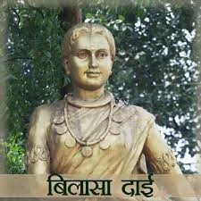

बिलासा बाई केवट

बिलासा बाई केवट का जीवन परिचय:
- पहचान और उत्पत्ति:
-
बिलासा बाई केवट एक मछुआरन थीं जो केवट समुदाय से संबंधित थीं।
- वे छत्तीसगढ़, भारत के क्षेत्र में रहती थीं।
- विरासत और योगदान
-
बिलासा बाई अपनी बहादुरी और अपने गाँव की रक्षा में अपनी भूमिका के
लिए प्रसिद्ध हैं।
-
वे छत्तीसगढ़ के स्थानीय इतिहास में साहस और दृढ़ता का प्रतीक हैं।
- स्मरण और सम्मान:
-
छत्तीसगढ़ में बिलासपुर शहर का नाम उनके सम्मान में रखा गया है, जो
क्षेत्र के इतिहास में उनके महत्व को दर्शाता है।
-
उनकी विरासत को छत्तीसगढ़ की सांस्कृतिक धरोहर के हिस्से के रूप में
मनाया और याद किया जाता है।
- सांस्कृतिक प्रभाव:
-
बिलासा बाई केवट की कहानी स्थानीय लोककथाओं का एक महत्वपूर्ण हिस्सा
है, जो आने वाली पीढ़ियों को प्रेरित करती है।
-
वे केवट समुदाय और सामान्य रूप से महिलाओं की वीरता और शक्ति का
प्रतिनिधित्व करती हैं।
- मान्यता:
-
क्षेत्र में उनके नाम पर संस्थानों और स्थलों का नामकरण किया गया है
ताकि उनकी स्मृति और योगदान को सम्मानित किया जा सके।